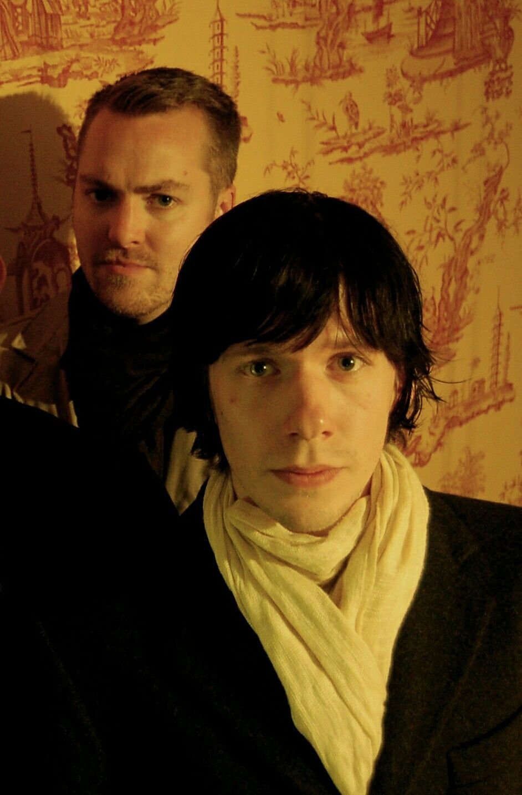

Tobias Forge creció en Linköping, Suecia . Pasó la mayor parte de su infancia viviendo con su madre y su hermano mayor, Sebastian, a quien atribuye su temprana formación musical.
Su madre estaba separada de su padre, a quien llegó a conocer como su madrastra. Sebastian le regaló muchos de sus discos cuando tenía tan solo tres o cuatro años, y a los ocho, Tobias ya tenía su propio disco y guitarra. También desarrolló un gran interés por el cine, lo que inspiró la creación y dirección de Rite Here Rite Now . El interés de Tobias por lo oculto también comenzó a temprana edad, manifestándose inicialmente como una aversión al cristianismo, ya que muchos de los cristianos que conoció en su infancia eran "gente poco agradable", incluyendo a su madrastra y a un profesor de religión particularmente estricto, quien se convirtió en su "símbolo del cristianismo y de la falta de amabilidad" Biografía Adolescencia Adultez